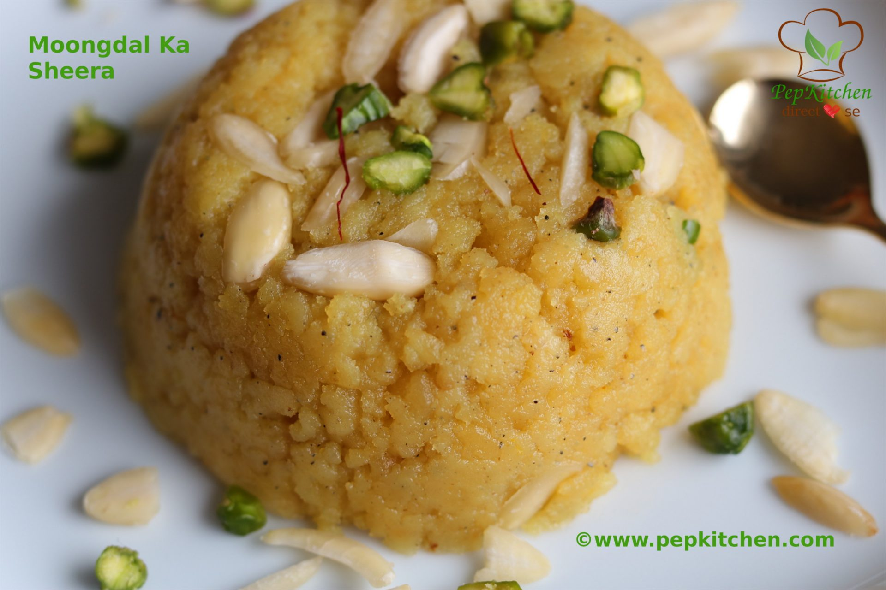

Moongdal Ka Sheera is a very delicious sweet for sheera lovers. This sweet is very rich, made from moongdal. The cooking of sheera is long but the end result is simply delicious and irresistible. The tempting dessert finds a place in wedding food, celebration. It is from Rajasthani cuisine and is glutenfree. At my home everyone is fond of the moong dal sheera. I love the coarse texture of the sheera and since it is made of moong dal it is nutritious. It is good for kids. Now a days you get moong dal flour in the stores which makes the making of sheera more easier. Many people use water to make sheera or the combination of milk and water, I have used milk to make sheera. Milk makes the sheera more rich. I prefer using a non stick pan for making sheera. It prevents sticking of the moong dal while cooking. Grind the moongdal to coarse mixture. This will make sheera of coarse texture. Try the recipe and I am sure your family and friends will love it!!
Wash and soak the moong dal for 5-6 hours.
Drain the water from the soaked moong dal in a strainer.
Grind the drained moong dal into coarse paste.
Heat ghee in a non stick pan. (leave a tbsp of ghee aside to add in the end)
When ghee is heated, add the coarse moong dal paste.
Saute the moong dal paste. It has absorbed all the ghee.
Saute the moong dal on medium heat. After 10 minutes, It will start to become dry.
The moongdal has now become dry and resembles like bread crumbs.
The milk has also boiled. Add few strands of saffron in it. (Wow the saffron is releasing a wonderful aroma).
Add the hot milk to the moong dal mixture. (be careful as the hot milk and moong dal will splutter).
The moong dal will start absorbing milk.
The sugar will melt and the mixture will become liquid again. Saute for sometime on medium heat.
Add cardamom powder to it.(leave a tsp cardamom powder to add at the end) Saute the mixture continuously to avoid sticking at the bottom. (the hands will get good exercise :-)).
After 10 minutes, the moisture will be absorbed.
Now saute till the moisture in the moong dal mixture is evaporated and the moong dal starts leaving ghee.
Add the remaining ghee and saute the moong dal mixture more.
Mix well and saute.
Add cardamom powder and mix well. (adding cardamom powder towards end gives nice aroma).
Saute the moong dal and the ghee is released. The entire process took me around 1.5 hours but was worth the efforts put in.
Add the pistachio and almonds. Mix well. The moong dal sheera is ready. Enjoy the moong dal sheera warm. The moong dal sheera remains good for a week when refrigerated. Warm the sheera in a microwave or steam cook in pressure cooker just before serving.
For serving the sheera. Grease a small bowl with ghee. Put hot moong dal ka sheera in it. Press it with a spoon and smoothen the surface. Unmould in a plate. Garnish with some almonds and pistachio and serve.